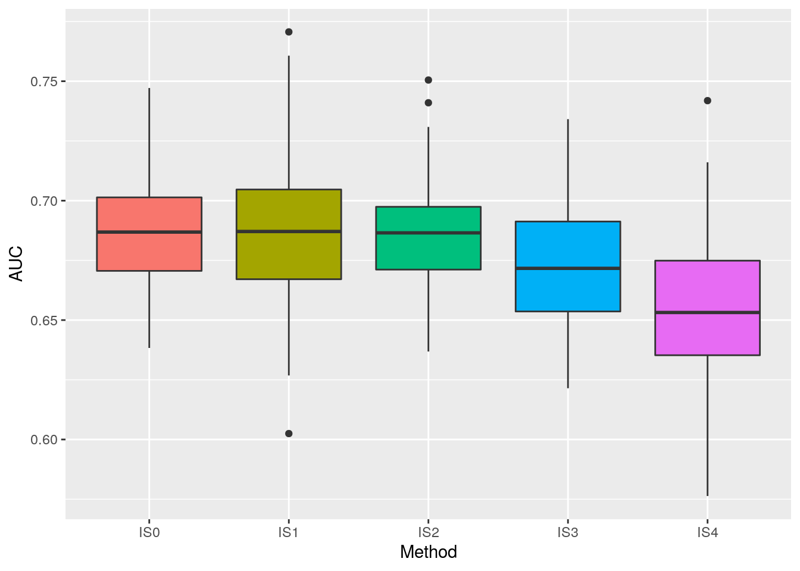

Full description of results
Our first step was to define whether our approach to this problem would be a one-vs-all or a multi-class framework. Welch’s t-test comparing both approaches (Figure S1) unveiled that there is, with more than 99.9 % confidence level, significant difference between the two means, t(197) = 10.795, p < 0.001. The highest mean is from the multi-class framework (0.633, with standard deviation equals 0.03), while the lower mean is from the one-vs-all approach (0.585, with standard deviation equals 0.05). In this way, following procedures were built upon the multi-class framework.
s1 <- Running_first_step(df, n)## [1] "Selected Framework: multiclass."
Figure 1: Distribution of 100 AUC values from the one-vs-all framework (blue) compared to the distribution of 100 AUC values from the multi-class framework (red).
Boosted Logistic Regression (M) was considered the best algorithm of our Algorithms Selection routine, with a mean AUC of 0.689, reaching maximum value of 0.813 (summing 1.502), followed by Conditional Inference Random Forest (cforest), with a mean AUC of 0.674 and maximum of 0.741 (summing 1.415). Random Forest (ranger) was the third best algorithm with mean AUC of 0.671 and maximum of 0.737 (summing 1.408). Results for all algorithms are summarized in Table 1.
s2$Result_Second_step %>%
datatable()Table 1: AUC values for the algorithms selection. Algorithms names are encoded as caret package values for the ‘method’ argument from ‘train’ function.
The four instance selection builds returned significantly different results. Analysis of variance showed that there was a significant effect from different instance selection approaches in AUC value [F(4) = 31.09, p < 0.01]. Post hoc Tukey test indicated that there was a significant difference between pairs of groups (p < 0.01), except between IS0 (mean = 0.687, max = 0.747), IS1 (mean = 0.685, max = 0.770) and IS2 (mean = 0.687, max = 0.750) mean values (p > 0.95). Mean and maximum AUC values for IS3 were 0.672 and 0.734, while for IS4 those values were 0.653 and 0.741, respectively. As IS0, IS1 and IS2 presented the same means, we decided to adopt the the highest sum between mean and maximum AUC values and use IS1 in the final model.
s3 <- Running_third_step(df, s1, s2, nclust, n_clust/2, n)## [1] "Instance Selection Selected: IS1."
Figure 2: Tukey post hoc test results comparing means between pairs of instance selection approaches. IS1 returned the greatest sum between mean and maximum AUC, thus was used in the next steps.
Concerning cforest’s tuning, as we had a low number of variables, the randomly sampled number of variables as candidates at each split could only be one, once when we considered more than one, AUC values dropped. Ranger has also this same parameter, since both are Random Forest approaches, but has also two more different parameters: split rule and the minimum node size. Split rules had different effects in the model: when using a random approach (extratrees) and one variable at each split, values of AUC would vary only between 0.82 and 0.83 independent of the minimum node size; on the other hand, when considering two or three variables, AUC values would increase with minimum node size until reach a plateau starting at 40 as minimum node size. In the opposite way, when considering a splitting approach that minimizes Gini impurity, AUC values would increase with minimum node size until reach a plateau starting at 40 as minimum node size, but as the number of variables at each split increased, maximum AUC decreased. In this way, we decided to set ranger parameters as only one variable per split, minimizing Gini impurity and with a minimum node size of 40. The relationship between AUC value and the number of iterations in LogitBoost presented a clear logarithmic shape, which led us to tune it with a minimum of 50 iterations.
s4 <- Running_fourth_step(df)## Warning in Running_fourth_step(df): Loading /home/reginaldo/UTFPR/projetos/
## General-Classification/data/computed/Fourth_step_result_GCF.rds.

Figure 3: Algorithms tuning results.
From all 100 runs, the maximum AUC value was 0.859, with mean AUC equals 0.816, standard deviation of 0.019 and minimum value reaching 0.761. Final model selected was built using ranger algorithm, with AUC equals 0.859. Number of variables randomly sampled as candidates at each split was one; the split rule used was the one where we minimize the Gini impurity; and the minimum node size was 41. s5 <- Running_fifth_step(df, s3, n)## NULL